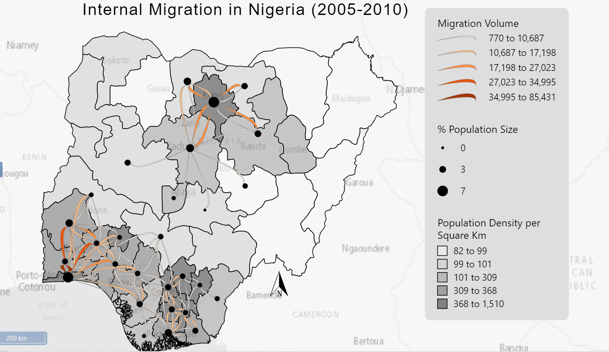

This website contains static geovisualization projects.
Places that attract the most flows include Lagos state, Kaduna State and Kano State. Most Migration flows are between Lagos and Osun state, Lagos and Osun, Ogun and Oyo state due various factors such as close proximity, urban nature and most likely similar cultures. Kaduna attracts most people from Kano and Katsina States while Kanos State attracts msot people from Kaduna, Bauchi, Jigawa and Katsina states. Conversely, Ogun state sends the most flows overall due to its closeness to the largest urban center in Nigeria which is lagos. Despite Lagos, being the smallest in terms of Land area, It contributes of the the Largest in terms of Population in relation to other states.
The general direction of flows shows that most migration happens around certain locations which have a distinct characteristics- urban areas. This occurs in the South Western region of the country, and the Northen region of the country.It displays a radial pattern which might indicate economic centers. These patterns are also consistent with the node symbols and the choropleth map which represents percentage population size and population density respectively. Places which recieve more flows tend to have a higher population size and a higher population density. In terms of population density, most states that have a higher population density tend to have higher population size and migration flows as expected. The densely populated area are towards south-western Nigeria and Northen Nigeria(excluding the north-east) while the sparcely ppulated areas are located in the estern part of the middle belt and the north eastern part of Nigeria and an outlier at the North western part which is in Zamfara state.
Reference
Koylu, C., Tian, G. and Windsor, M. (2021) FlowMapper.org: Web-based and interactive framework for designing origin-destination flow maps.
Download Flowmap JSON file